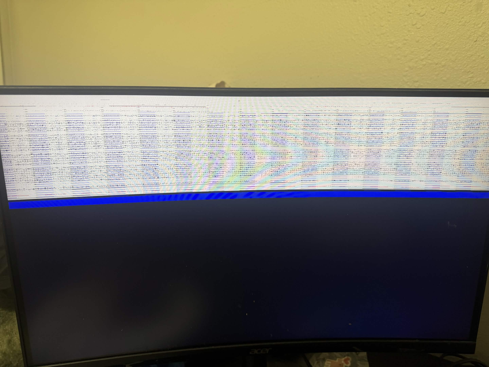

journal · 14 august 2026
Installing Proxmox without USB or a working screen
Notes on setting up a home lab server. The USB stick for the installer turned out to be defective, so the install ran over the network instead. The installer could not render on the monitor, so the last attempt ran unattended from an answer file.
- Hardware
- Lenovo ThinkCentre M70q Gen 3 Tiny, i5-12400T, 16GB, 512GB NVMe, used, about $290 on eBay
- Install target
- Proxmox VE 9.2, boot server on a Windows 11 laptop over WiFi
- Tools
- Rufus, Tiny PXE Server, iPXE, iVentoy, WSL2, Docker, proxmox-auto-install-assistant
- Result
- Unattended install completed in about 3 minutes. The machine runs headless on a static IP.
The USB stick
The first plan was the normal one, flash the ISO to a USB stick with Rufus and boot from it. The stick was a Memorex 64GB bought new. The first flash wrote at about 2 MB/s and then Rufus stopped responding. Killing it mid-write corrupted the partition table. Windows showed insert disk errors and a PowerShell wipe with Clear-Disk hung, because the stick was also dropping off the USB bus on its own. Unplugging and replugging it reset the controller, and after that a full wipe and exFAT format finished in seconds. This was misleading. Short writes worked, so the stick looked healthy.
A second flash in a rear USB 3 port stalled the same way. This time I watched the disk performance counters instead of the Rufus window. No write activity for over three minutes while the UI still said Writing image with the timer counting. The timer is a clock, not proof of progress.
To rule out Rufus, a PowerShell script wrote 1GB of random data to the stick in 8MB chunks with forced flushes. The stick accepted about 49MB over 13 minutes, then locked up the volume so hard a file size query hung. That reproduced the failure with no flashing tool involved. The stick handles short writes and fails partway into any sustained sequential write, then wedges its controller until power cycled. It went back to the store.
Rather than buy another stick I decided to install over the network, since the machine exists to learn networking anyway.
PXE boot
A machine with no operating system can boot from the network. The firmware broadcasts a DHCP request, a boot server answers with a file name, the firmware downloads that file over TFTP and runs it. The file is a small bootloader called iPXE, which then downloads the real payload over HTTP, since TFTP is too slow for large files.
The constraint was that this had to run on the home network without disturbing it. A second DHCP server handing out addresses can conflict with the router and break connectivity for every device on the network. The PXE spec covers this with proxyDHCP. A proxy answers only the boot questions and hands out no addresses, the router keeps assigning IPs, and devices that are not PXE booting never see it. I ran Tiny PXE Server on my laptop in proxy mode.
The first boot attempt produced nothing on the client. The server log had the reason:
OFFER sent, IP:0.0.0.0
TFTPd:DoReadFile OpenError:ipxe-x86_64.efi
Cannot open file "C:\pxe\ipxe-x86_64.efi"The TFTP root was C:\pxe and the boot files were one folder deeper. After moving them, the log showed the transfer complete and iPXE started on the client. Most of the failures this night looked like this: nothing visible on the machine being installed, and a specific reason in a log on the machine doing the serving.
The initrd size limit
The Proxmox installer expects to find its install media on a disc or USB stick. To netboot it, a community script repacks the whole ISO inside the initrd, the filesystem the kernel loads into memory at boot. For Proxmox 9.2 the result is 2.0GB. iPXE under UEFI would not load it. It read the file size from the HTTP response header and exited before transferring anything. Older Proxmox ISOs were small enough for this method, which is why the guides that describe it worked when they were written.
iVentoy
iVentoy avoids the size problem by emulating a disk over the network and serving blocks of the ISO on demand, so nothing has to fit in memory. It failed silently three times before it worked, each time with the same symptom on the client, a PXE prompt that timed out with no answer, and each time for a different reason.
- It bound to a VirtualBox host-only adapter instead of the real WiFi adapter, so the boot requests arrived on an interface it was not listening on.
- Windows Firewall had no rules for it. Two netsh rules opened UDP 67, 69 and 4011, and TCP 16000.
- Its proxy mode does not open a socket on port 67 at all. netstat -ano showed ports 69 and 4011 held by the process and port 67 owned by nothing, and whatever mechanism it uses to see DHCP broadcasts without a socket does not work on this WiFi adapter. Tiny PXE Server had received the same broadcasts on the same adapter through a normal socket.
There was also a restart bug. Stopping and starting the service from its own web UI leaked the DHCP socket, and the next start failed against it:
Failed to bind socket 10.0.0.33:4011 errno:10048
Only one usage of each socket address is normally permitted.Killing the process was the only thing that released the port.
Since proxy mode could not work on this adapter, I switched iVentoy to internal mode, which is a real DHCP server with a normal socket on port 67. That is the configuration the proxy exists to avoid, so the risk got limited instead: the lease pool did not overlap the router’s, every lease carried a working gateway and DNS so any device that took one would still function, it ran after midnight, and it was stopped as soon as the install finished. The next boot reached the iVentoy menu.
The display

The boot menus were readable because they use the display mode the firmware set. When the Linux kernel reprogrammed the display, the monitor showed the band of static above. The graphical installer and the terminal installer were equally unreadable, and nomodeset did not change it. Pressing tab moved focus between form fields I could not see. I was not going to fill in a disk wipe form blind.
Unattended install
Proxmox supports automated installation. You write a TOML answer file containing every choice the installer would ask for, and an official tool bakes it into the ISO. The result installs without asking anything, which also means it does not need a screen.
The tool is packaged for Debian and the laptop runs Windows, so it ran in a temporary Docker container. One more iVentoy detail cost time here: the process holds open file handles on its ISOs even while its service is stopped, so replacing the ISO meant killing the process, swapping the file, and relaunching.
The bug in my answer file
The first automated run went silent. The server logs showed the installer boot, mount the virtual disk, and request an address at 00:46. Then nothing until a DHCP lease renewal 25 minutes later. The renewal meant the installer environment was still running and still idle. An automated installer that is idle is stopped at an error prompt, and on this monitor an error prompt renders as static.
The error was in my answer file. I had selected the target disk with filter.NVME = "*", a filter key I had guessed at. The validator accepted it because the syntax was legal. At runtime it matched no disks, and the installer stopped to ask a question that could not be seen or answered. The corrected file uses literal values:
[network]
source = "from-dhcp"
[disk-setup]
filesystem = "ext4"
disk-list = ["nvme0n1"]The validator checks that the file is well formed, not that its values match the hardware. A filter that matches nothing passes validation and fails at runtime, silently if no one can see the console.
The rebuilt ISO installed in about three minutes. The web interface answered on its static address at 00:49, I stopped the iVentoy DHCP server, and the router went back to being the only DHCP server on the network. The machine now runs headless. Management is through the web UI, so the monitor is unplugged.
Notes
- Every failure in this project was invisible on the machine being installed and explained in a log on the machine serving it. The client screen was never the useful place to look.
- Three silent PXE failures had three different causes, wrong interface, firewall, missing socket. netstat -ano settles which process owns a port.
- A stick that formats fine can still be dead, because formatting writes almost nothing. A sustained 1GB write with forced flushes is a quick health check, and progress bars are not evidence of progress. Disk write counters are.
- The DHCP lease renewal was what identified the stalled install. The protocol traffic a machine produces is diagnostic data even when the machine is otherwise silent.
- Building the boot chain by hand before switching to iVentoy is why the iVentoy failures were debuggable. I knew which packet was supposed to arrive next.